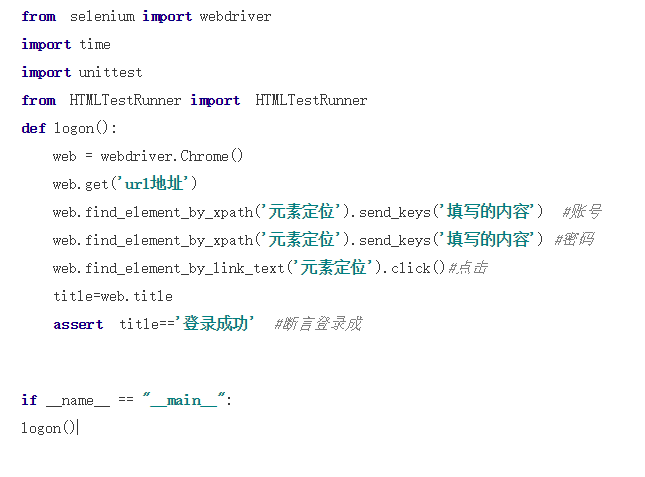

英语君测试笔试题目
作者：从小就疯了 观看群众：30 分类：博客日志 更新时间：2020年02月15日
-
面试题—
从应用商店下载‘腾讯英语君’，选择“我是学生”，登录进去后完成示例作业，并写出跟读用例,格式不限。
前置条件：已经下载好了腾讯英语君，并且已经选择我是学生已经进入了学习个人首页
用例1：选择跟读句子如：1年级词汇句型，点击跟读点，跳转到词汇学习页面，点击开始学习跳转到朗诵单词页面，并且播放第一个单词读音
用例2：在单词汇页面，点击喇叭图片朗诵对应单词
用例3：在单词汇页面，点击开始跟读，将自动进行录音，点击结束到记时结束后给出对应评级，并给出评价如非常棒没听清，发音待提高等
用例4：在单词汇页面，点击开始跟读，将自动进行录音，如无任何操作3秒之后自动结束录音，并给出评价如非常棒没听清，发音待提高等 -
面试题二
过往项目中做过哪些APP的专项测试，都是怎么做的。
app测试通常采用模拟器或者真机来作为测试环境，通过后台监控日志来定位问题,一般常见的app专项测试有以下几种
1.异常测试：包括业务流程的异常情况；业务场景的异常；操作习惯的异常
2.权限测试：如位置，通讯录，相机，语音，等
3.网络切换测试：2G网络，3G网络，4G网络，无网络等
4.页面刷新测试：收到推送数据页面刷新，切换别的应用在次返回刷新，杀掉app，重新登录刷新
5.缓存测试：包括强制退出，后台清理，黑屏，关机，断网等异常情况。
6.兼容性测试：如包括手机系统的版本和手机的分辨率，以及特殊机型（主要是在原生的系统上做了封装的品牌
7.特殊操作测试：如左右滑动、长按、连续点击、拖拽、列表页面连续的上下滑动，特别是在数据还没加载出来的情况，继续滑动；iOS需要注意输入法遮挡页面的问题；
8.内存：测试在同时开启很多应用的情况，操作被测APP，是否会出现异常；在使用被测APP进行某些业务流程，进行到中间的某一步
9.安装 更新 卸载：安装：需考虑安装时的中断 弱网 安装后删除安装文件等情况卸载：需考虑 卸载后是否删除app相关的文件更新：分强制更新 非强制更新 增量包更新断点续传 弱网状态下更新 -
面试题三
adb命令用过哪些,给出具体的用法或者说明
常用的adb命令有以下
1.adb version 查看版本，和安装路径
2.adb devices 查看当前运行的设备
3.adb connect 127.0.0.1:62001连接夜神模拟器，不同的模拟器有默认的端口号 逍遥21503
4.adb install apk包名 安装应用apk包
5.adb install -r 接包名 重新安装apk包
6.adb uninstall 接apk包名 卸载
7.aapt dunp badging 接apk文件名称 查看apk包名和activity -
面试题四
用过哪些APP或者web自动化框架，写一个登陆的自动化或者接口测试用例，语言不限

Copyright © 2019 - 赣ICP备9678122号, All Rights Reserved Powered By 从小就疯了 1.0.0